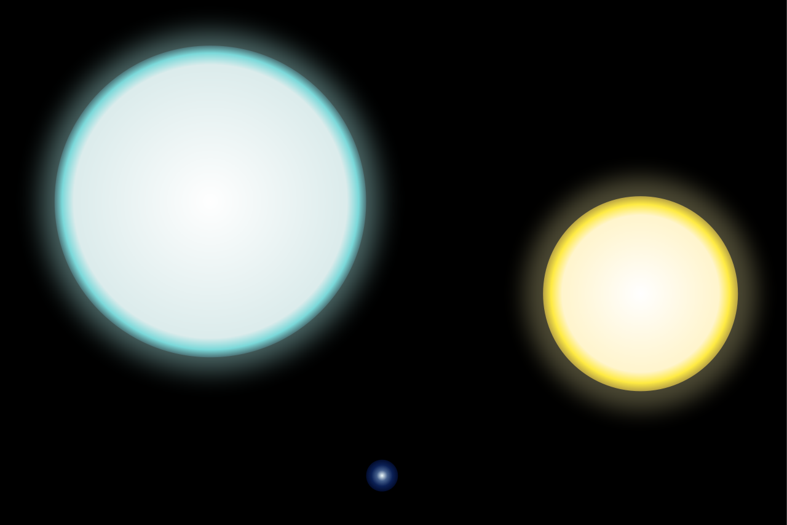

SAO LÙN TRẮNG
ĐỊNH NGHĨA
-Sao lùn trắng (hay còn gọi là sao trắt trắng)[1] là thiên thể được tạo ra khi các ngôi sao có khối lượng thấp và trung bình "chết" (tiêu thụ hết nhiên liệu phản ứng hạt nhân trong sao).[2] Các ngôi sao này không đủ nặng để sinh ra nhiệt độ ở lõi cần thiết để nung chảy cacbon trong các phản ứng tổng hợp hạt nhân sau khi chúng chuyển thành các sao khổng lồ đỏ trong giai đoạn đốt cháy heli. Cuối giai đoạn này, nửa bên ngoài của sao kềnh đỏ sẽ bị đẩy ra không gian tạo thành tinh vân, để lại đằng sau một lõi trơ chứa chủ yếu là cacbon và oxy, đó chính là sao lùn trắng. Lõi này không còn nguồn cung cấp năng lượng và bức xạ dần nhiệt của chúng ra bên ngoài và nguội dần đi. Lõi không còn sự hỗ trợ của các phản ứng nhiệt hạch để chống lại lực hấp dẫn sẽ bị trở thành cực kỳ cô đặc, với khối lượng vào khoảng một nửa Mặt Trời và trong thể tích khoảng bằng Trái Đất. Các sao lùn trắng được hỗ trợ duy nhất bởi áp suất suy biến điện tử. Khối lượng cực đại của các sao lùn trắng, mà vượt quá nó thì áp suất suy biến không thể duy trì lâu, là khoảng 1,4 khối lượng Mặt Trời. Sao lùn trắng mà vượt quá giới hạn này (gọi là giới hạn Chandrasekhar), chủ yếu do khối lượng được chuyển tới bởi sao đôi đồng hành, có thể nổ tung như các siêu tân tinh. Cuối cùng, sau hàng chục tỷ năm, sao lùn trắng sẽ nguội tới nhiệt độ mà từ đó nó không còn được nhìn thấy. Tuy nhiên, với tuổi vũ trụ mới vào khoảng 15 tỷ năm, thậm chí cả các sao lùn trắng già nhất vẫn còn bức xạ với nhiệt độ vài nghìn độ K.

-Sao lùn trắng (hay còn gọi là sao trắt trắng)[1] là thiên thể được tạo ra khi các ngôi sao có khối lượng thấp và trung bình "chết" (tiêu thụ hết nhiên liệu phản ứng hạt nhân trong sao).[2] Các ngôi sao này không đủ nặng để sinh ra nhiệt độ ở lõi cần thiết để nung chảy cacbon trong các phản ứng tổng hợp hạt nhân sau khi chúng chuyển thành các sao khổng lồ đỏ trong giai đoạn đốt cháy heli. Cuối giai đoạn này, nửa bên ngoài của sao kềnh đỏ sẽ bị đẩy ra không gian tạo thành tinh vân, để lại đằng sau một lõi trơ chứa chủ yếu là cacbon và oxy, đó chính là sao lùn trắng. Lõi này không còn nguồn cung cấp năng lượng và bức xạ dần nhiệt của chúng ra bên ngoài và nguội dần đi. Lõi không còn sự hỗ trợ của các phản ứng nhiệt hạch để chống lại lực hấp dẫn sẽ bị trở thành cực kỳ cô đặc, với khối lượng vào khoảng một nửa Mặt Trời và trong thể tích khoảng bằng Trái Đất. Các sao lùn trắng được hỗ trợ duy nhất bởi áp suất suy biến điện tử. Khối lượng cực đại của các sao lùn trắng, mà vượt quá nó thì áp suất suy biến không thể duy trì lâu, là khoảng 1,4 khối lượng Mặt Trời. Sao lùn trắng mà vượt quá giới hạn này (gọi là giới hạn Chandrasekhar), chủ yếu do khối lượng được chuyển tới bởi sao đôi đồng hành, có thể nổ tung như các siêu tân tinh. Cuối cùng, sau hàng chục tỷ năm, sao lùn trắng sẽ nguội tới nhiệt độ mà từ đó nó không còn được nhìn thấy. Tuy nhiên, với tuổi vũ trụ mới vào khoảng 15 tỷ năm, thậm chí cả các sao lùn trắng già nhất vẫn còn bức xạ với nhiệt độ vài nghìn độ K.

ĐẶC TRƯNG
Nhiều sao lùn trắng có kích thước xấp xỉ Sao Hoả khoảng 100 lần nhỏ hơn Mặt Trời. Chúng có thể có khối lượng xấp xỉ Mặt Trời vì thế chúng rất đặc. Cho là cùng một khối lượng vật chất như Mặt Trời, chứa trong một dung tích của một hình cầu đường kính nhỏ hơn 100 lần, vì thế thể tích là 100³=1.000.000 lần nhỏ hơn Mặt Trời và do đó mật độ trung bình của vật chất trong các sao lùn trắng là 1.000.000 lần lớn hơn mật độ trung bình của Mặt Trời. Các vật chất ở trạng thái như vậy được gọi là suy biến. Trong những năm thập niên 1930 sự giải thích được cho là do hiệu ứng của cơ học lượng tử: Trọng lượng của sao lùn trắng được duy trì bởi áp suất của các điện tử (sự suy biến của điện tử), nó chỉ phụ thuộc vào mật độ mà không phụ thuộc vào nhiệt độ. Nếu làm biểu đồ so sánh độ sáng (tuyệt đối) với màu sắc đối với các sao đã quan sát được (biểu đồ Hertzsprung-Russell), thì không diễn ra mọi tổ hợp của độ sáng và màu sắc. Có một số sao ở trong khu vực độ sáng thấp-màu nóng (sao lùn trắng), nhưng phần lớn các sao nằm trong một dải, gọi là chuỗi chính. Các sao khối lượng nhỏ nằm trong chuỗi chính là nhỏ và nguội. Chúng được nhìn thấy có màu đỏ và gọi là sao lùn đỏ hay là sao lùn nâu (nguội hơn). Các dạng này là loại thiên thể hoàn toàn khác với các sao lùn trắng. Trong sao lùn đỏ, cũng như trong các sao của chuỗi chính, áp suất cân bằng trọng lượng là sinh ra do chuyển động nhiệt của khí nóng. Áp suất tuân theo định luật của khí lý tưởng. Một loại khác của các sao được gọi là khổng lồ: các sao trong phần độ sáng cao của biểu đồ độ sáng-màu sắc. Chúng là các sao bị nổ tung bởi áp suất bức xạ và là rất lớn. Các sao lùn trắng là rất nóng; vì thế chúng bức xạ ra ánh sáng trắng. Phần nhiệt này là phần còn lại của nhiệt sinh ra do sự sụp đổ của sao và nó không được bổ sung thêm (trừ trường hợp chúng thu được vật chất từ các sao gần đó), nhưng do bề mặt bức xạ rất nhỏ nên chúng duy trì được sức nóng trong một thời gian dài. Cuối cùng, sao lùn trắng sẽ nguội đi và trở thành sao lùn đen. Các sao lùn đen, trên lý thuyết, là các thực thể nhiệt độ thấp và bức xạ yếu trong quang phổ vô tuyến. Tuy nhiên, vũ trụ chưa tồn tại đủ lâu để bất kỳ sao lùn trắng nào nguội đến mức trở thành sao lùn đen. Rất nhiều sao lùn trắng trẻ tuổi ở gần đã được phát hiện như là nguồn bức xạ các tia X mềm (tia X có năng lượng thấp); các quan sát bằng tia X và tia cực tím cho phép các nhà thiên văn nghiên cứu thành phần và cấu trúc của lớp khí quyển mỏng của các sao này. Sao lùn trắng không thể có khối lượng vượt quá 1,4 khối lượng Mặt Trời, giới hạn Chandrasekhar [3], nhưng có một cách để chúng vượt qua giới hạn này. Nếu sao lùn trằng bay thành cặp với một ngôi sao thông thường khác, nó có thể hút vật chất từ sao đôi đồng hành. Vật chất hút được rất chậm và ổn định. Khối lượng của sao lùn trắng tăng lên cho đến khi vượt qua giới hạn Chandrasekhar, từ điểm đó áp suất suy thoái không thể duy trì được sao. Nó tạo thành dạng siêu tân tinh loại Ia và là mạnh nhất trong các siêu tân tinh. Trong một số trường hợp, vật chất hút từ sao đồng hành chứa nhiều hiđrô, gây ra phản ứng hạt nhân nổ bùng ở dạng yếu hơn siêu tân tinh, gọi là các vụ nổ sao lùn trắng. Các vụ nổ này chỉ xảy ra ở vỏ chứa các vật chất mới hút vào, không ảnh hưởng đến lõi bên trong sao lùn trắng, và có thể lặp đi lặp lại nếu vẫn có dòng vật chất nhiều hiđrô chảy đến.
Nhiều sao lùn trắng có kích thước xấp xỉ Sao Hoả khoảng 100 lần nhỏ hơn Mặt Trời. Chúng có thể có khối lượng xấp xỉ Mặt Trời vì thế chúng rất đặc. Cho là cùng một khối lượng vật chất như Mặt Trời, chứa trong một dung tích của một hình cầu đường kính nhỏ hơn 100 lần, vì thế thể tích là 100³=1.000.000 lần nhỏ hơn Mặt Trời và do đó mật độ trung bình của vật chất trong các sao lùn trắng là 1.000.000 lần lớn hơn mật độ trung bình của Mặt Trời. Các vật chất ở trạng thái như vậy được gọi là suy biến. Trong những năm thập niên 1930 sự giải thích được cho là do hiệu ứng của cơ học lượng tử: Trọng lượng của sao lùn trắng được duy trì bởi áp suất của các điện tử (sự suy biến của điện tử), nó chỉ phụ thuộc vào mật độ mà không phụ thuộc vào nhiệt độ. Nếu làm biểu đồ so sánh độ sáng (tuyệt đối) với màu sắc đối với các sao đã quan sát được (biểu đồ Hertzsprung-Russell), thì không diễn ra mọi tổ hợp của độ sáng và màu sắc. Có một số sao ở trong khu vực độ sáng thấp-màu nóng (sao lùn trắng), nhưng phần lớn các sao nằm trong một dải, gọi là chuỗi chính. Các sao khối lượng nhỏ nằm trong chuỗi chính là nhỏ và nguội. Chúng được nhìn thấy có màu đỏ và gọi là sao lùn đỏ hay là sao lùn nâu (nguội hơn). Các dạng này là loại thiên thể hoàn toàn khác với các sao lùn trắng. Trong sao lùn đỏ, cũng như trong các sao của chuỗi chính, áp suất cân bằng trọng lượng là sinh ra do chuyển động nhiệt của khí nóng. Áp suất tuân theo định luật của khí lý tưởng. Một loại khác của các sao được gọi là khổng lồ: các sao trong phần độ sáng cao của biểu đồ độ sáng-màu sắc. Chúng là các sao bị nổ tung bởi áp suất bức xạ và là rất lớn. Các sao lùn trắng là rất nóng; vì thế chúng bức xạ ra ánh sáng trắng. Phần nhiệt này là phần còn lại của nhiệt sinh ra do sự sụp đổ của sao và nó không được bổ sung thêm (trừ trường hợp chúng thu được vật chất từ các sao gần đó), nhưng do bề mặt bức xạ rất nhỏ nên chúng duy trì được sức nóng trong một thời gian dài. Cuối cùng, sao lùn trắng sẽ nguội đi và trở thành sao lùn đen. Các sao lùn đen, trên lý thuyết, là các thực thể nhiệt độ thấp và bức xạ yếu trong quang phổ vô tuyến. Tuy nhiên, vũ trụ chưa tồn tại đủ lâu để bất kỳ sao lùn trắng nào nguội đến mức trở thành sao lùn đen. Rất nhiều sao lùn trắng trẻ tuổi ở gần đã được phát hiện như là nguồn bức xạ các tia X mềm (tia X có năng lượng thấp); các quan sát bằng tia X và tia cực tím cho phép các nhà thiên văn nghiên cứu thành phần và cấu trúc của lớp khí quyển mỏng của các sao này. Sao lùn trắng không thể có khối lượng vượt quá 1,4 khối lượng Mặt Trời, giới hạn Chandrasekhar [3], nhưng có một cách để chúng vượt qua giới hạn này. Nếu sao lùn trằng bay thành cặp với một ngôi sao thông thường khác, nó có thể hút vật chất từ sao đôi đồng hành. Vật chất hút được rất chậm và ổn định. Khối lượng của sao lùn trắng tăng lên cho đến khi vượt qua giới hạn Chandrasekhar, từ điểm đó áp suất suy thoái không thể duy trì được sao. Nó tạo thành dạng siêu tân tinh loại Ia và là mạnh nhất trong các siêu tân tinh. Trong một số trường hợp, vật chất hút từ sao đồng hành chứa nhiều hiđrô, gây ra phản ứng hạt nhân nổ bùng ở dạng yếu hơn siêu tân tinh, gọi là các vụ nổ sao lùn trắng. Các vụ nổ này chỉ xảy ra ở vỏ chứa các vật chất mới hút vào, không ảnh hưởng đến lõi bên trong sao lùn trắng, và có thể lặp đi lặp lại nếu vẫn có dòng vật chất nhiều hiđrô chảy đến.
LỊCH SỬ THÁM HIỂM
Năm 1862, Alvan Graham Clark phát hiện ra sao đồng hành sẫm màu của sao sáng nhất [4], sao Thiên Lang (Sirius hay Alpha Canis Majoris). Sao đồng hành được gọi là Thiên Lang B (Sirius B hay Pup), có nhiệt độ bề mặt khoảng 25.000 K, vì thế nó được phân loại là sao nóng. Tuy nhiên, Sirius B khoảng 10.000 lần mờ nhạt hơn Sirius A. Mặc dù nó là sao rất sáng trên một đơn vị diện tích bề mặt, Sirius B [5][6] là nhỏ hơn nhiều so với Sirius A, với đường kính xấp xỉ Trái Đất. Phân tích quỹ đạo của hệ thống sao Thiên Lang chỉ ra rằng khối lượng của Sirius B xấp xỉ bằng khối lượng của Mặt Trời. Điều này có nghĩa là Sirius B là hàng trăm nghìn lần nặng hơn chì. Càng nhiều sao lùn trắng được tìm thấy, các nhà thiên văn phát hiện ra rằng sao lùn trắng là phổ biến trong thiên hà của chúng ta. Năm 1917, Adriaan Van Maanen phát hiện ra sao Van Maanen, là sao lùn trắng thứ hai được biết và gần Mặt Trời hơn Sirius B. Sau khi phát minh ra cơ học lượng tử trong những năm thập niên 1920, sự giải thích về tỷ trọng của các sao lùn trắng đã được tìm thấy vào năm 1926. R.H. Fowler giải thích các tỷ trọng cao trong bài báo "Dense matter" (Vật chất đậm đặc) (Monthly Notices R. Astron. Soc. 87, 114-122) sử dụng áp suất suy biến điện tử vài tháng sau khi có công thức thống kê Fermi-Dirac cho điện tử, mà áp suất của điện tử dựa vào công thức này. Năm 1930, S. Chandrasekhar [7] phát hiện trong bài báo gọi là "The maximum mass of ideal white dwarfs" (Khối lượng cực đại của các sao lùn trắng lý tưởng) (Astroph. J. 74, 81-82) rằng "không có sao lùn trắng nào có thể nặng hơn 1,2 lần Mặt Trời". Điều này hiện nay gọi là giới hạn Chandrasekhar. Chandrasekhar nhận được giải Nobel năm 1983.
Năm 1862, Alvan Graham Clark phát hiện ra sao đồng hành sẫm màu của sao sáng nhất [4], sao Thiên Lang (Sirius hay Alpha Canis Majoris). Sao đồng hành được gọi là Thiên Lang B (Sirius B hay Pup), có nhiệt độ bề mặt khoảng 25.000 K, vì thế nó được phân loại là sao nóng. Tuy nhiên, Sirius B khoảng 10.000 lần mờ nhạt hơn Sirius A. Mặc dù nó là sao rất sáng trên một đơn vị diện tích bề mặt, Sirius B [5][6] là nhỏ hơn nhiều so với Sirius A, với đường kính xấp xỉ Trái Đất. Phân tích quỹ đạo của hệ thống sao Thiên Lang chỉ ra rằng khối lượng của Sirius B xấp xỉ bằng khối lượng của Mặt Trời. Điều này có nghĩa là Sirius B là hàng trăm nghìn lần nặng hơn chì. Càng nhiều sao lùn trắng được tìm thấy, các nhà thiên văn phát hiện ra rằng sao lùn trắng là phổ biến trong thiên hà của chúng ta. Năm 1917, Adriaan Van Maanen phát hiện ra sao Van Maanen, là sao lùn trắng thứ hai được biết và gần Mặt Trời hơn Sirius B. Sau khi phát minh ra cơ học lượng tử trong những năm thập niên 1920, sự giải thích về tỷ trọng của các sao lùn trắng đã được tìm thấy vào năm 1926. R.H. Fowler giải thích các tỷ trọng cao trong bài báo "Dense matter" (Vật chất đậm đặc) (Monthly Notices R. Astron. Soc. 87, 114-122) sử dụng áp suất suy biến điện tử vài tháng sau khi có công thức thống kê Fermi-Dirac cho điện tử, mà áp suất của điện tử dựa vào công thức này. Năm 1930, S. Chandrasekhar [7] phát hiện trong bài báo gọi là "The maximum mass of ideal white dwarfs" (Khối lượng cực đại của các sao lùn trắng lý tưởng) (Astroph. J. 74, 81-82) rằng "không có sao lùn trắng nào có thể nặng hơn 1,2 lần Mặt Trời". Điều này hiện nay gọi là giới hạn Chandrasekhar. Chandrasekhar nhận được giải Nobel năm 1983.